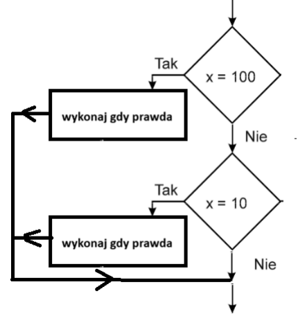
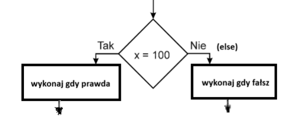

KOD HTML
<!DOCTYPE html> <html lang="pl"> <head> <meta charset="UTF-8"> <title>Narkiewicz Z34_html</title> </head> <body> <h2><b>1) Instrukcja wyboru – składnia teoretyczna</b></h2> <p> Instrukcja wyboru polega na sprawdzaniu warunku logicznego i wykonaniu określonych instrukcji, jeśli warunek jest prawdziwy. Każdy warunek działa niezależnie od pozostałych. </p> <pre> if (warunek_logiczny1) { // instrukcje jeśli warunek_logiczny1 prawdziwy } if (warunek_logiczny2) { // instrukcje jeśli warunek_logiczny2 prawdziwy } </pre> <h2><b>2) Instrukcja wyboru – schemat blokowy</b></h2> <p>Przykładowy schemat blokowy instrukcji wyboru:</p> <p></p> <h2><b>3) Instrukcja alternatywy – składnia teoretyczna</b></h2> <p> Instrukcja alternatywy pozwala wykonać jeden z dwóch bloków kodu: pierwszy, gdy warunek jest prawdziwy, drugi – gdy jest fałszywy. </p> <pre> if (warunek_logiczny) { // instrukcje jeśli warunek_logiczny prawdziwy } else { // instrukcje jeśli warunek_logiczny fałszywy } </pre> <h2><b>4) Instrukcja alternatywy – schemat blokowy</b></h2> <p></p> <h2><b>5) Operatory porównania</b></h2> <table border="1" cellpadding="6"> <tr><th>Operator</th><th>Opis</th><th>Przykład</th></tr> <tr><td>==</td><td>jest równe</td><td>2==3 → fałsz</td></tr> <tr><td>!=</td><td>nie jest równe</td><td>2!=3 → prawda</td></tr> <tr><td>></td><td>jest większe</td><td>25>3 → prawda</td></tr> <tr><td><</td><td>jest mniejsze</td><td>2<3 → prawda</td></tr> <tr><td>>=</td><td>większe lub równe</td><td>25>=3 → prawda</td></tr> <tr><td><=</td><td>mniejsze lub równe</td><td>2<=3 → prawda</td></tr> </table> <h2><b>6) Uwaga do operatorów porównania</b></h2> <p> Należy odróżnić operator porównania <b>==</b> od operatora przypisania <b>=</b>.<br> == → porównuje wartości<br> = → przypisuje wartość, np. a = 5; </p> <h2><b>7) Operatory logiczne</b></h2> <table border="1" cellpadding="6"> <tr><th>Operator</th><th>Opis</th><th>Przykład</th></tr> <tr><td>&&</td><td>logiczne „i”</td><td>x=3, y=4 → (x<9 && y>2) → prawda</td></tr> <tr><td>||</td><td>logiczne „lub”</td><td>x=3, y=4 → (x==8 || y==6) → fałsz</td></tr> <tr><td>!</td><td>zaprzeczenie</td><td>x=3, y=4 → !(x==y) → prawda</td></tr> </table> </body> <!-- Narkiewicz Z34_JS --> </html>